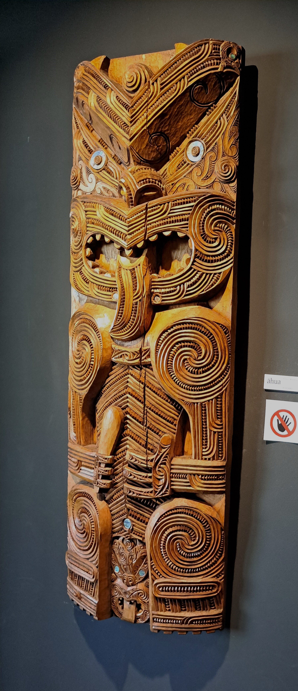
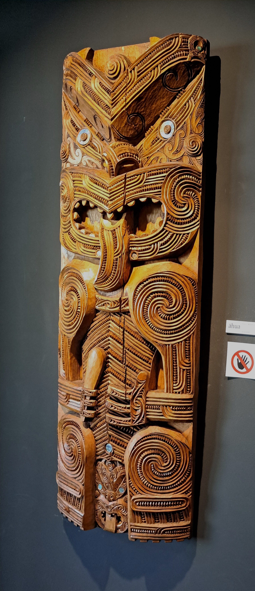

MUD POOL
The mud pool is the result of acid gases and steam that cause the decomposition of minerals (feldspars) to form a clay called kaolin. Kaolin is white when pure, but finely divided black sulphur turns it to grey. The activity varies with the amount of rainfall, but the temperature of the steaming bursts of mud is approximately 90-95 degrees Celsius (194-203 degrees Fahrenheit). This mud pool is also known as the “Frog Pool” because of the similarity between the plopping mud and leaping frogs. Some pools contain mud with medicinal properties that are used to treat skin, rheumatic and arthritic ailments. Māori traditionally used the mud to treat stomach infections by mixing a small amount with water and drinking it. Mud pools are created in areas that have limited hot water, but abundant supplies of steam and rock. That “pongy” smell Rotorua is famous for is due to hydrogen sulphide released by geothermal features. When released into the air, the hydrogen sulphide reacts with oxygen, creating sulphuric acid. This acid has the ability to dissolve rock into fine particles of silica and clay, and when combined with a small supply of water, a mud pool is created. The Rotorua Thermal Mud used in face masks and other beauty products is sourced from mud pools about ten times the size of Ngāmōkaiakoko Mud Pool. You can purchase some of these products from Te Puia’s Gift Shop.
 
